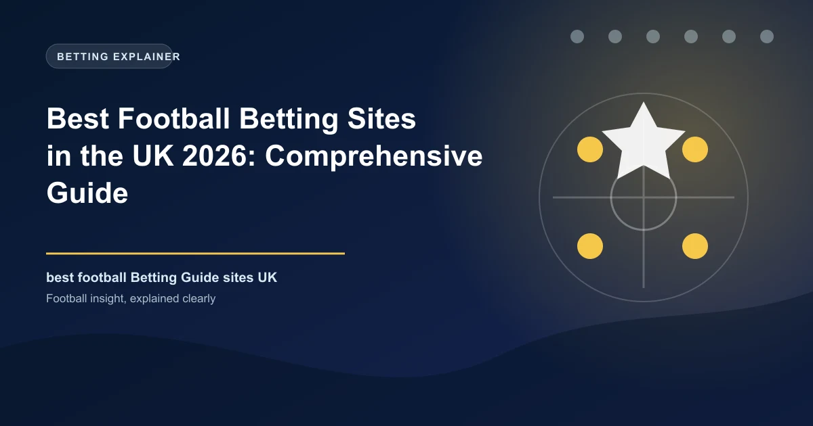

The United Kingdom is the most competitive football betting market on the planet. British punters have access to dozens of world-class bookmakers, all fighting for your business with free bets, price boosts, and ever-deepening market coverage. But with that choice comes confusion. Which bookie actually offers the best odds? Which one pays out fastest? And which ones are worth your time when every high street and every app store seems to have another offer? We spent over 130 hours evaluating 38 UK-licensed bookmakers to bring you this definitive guide.
Before we dive into individual bookmaker reviews, it is worth understanding the broader context of the UK betting market. This is not like any other market in the world. The UK Gambling Commission (UKGC) enforces some of the strictest regulations on the planet, and the landscape has shifted dramatically over the past five years.
The UKGC is widely regarded as the gold standard for gambling regulation worldwide. Every bookmaker listed in this guide holds a UKGC license, which means they are required to segregate customer funds from operating capital, undergo regular independent auditing, publish payout percentages, and provide comprehensive responsible gambling tools. The UKGC has the power to issue multi-million-pound fines to operators who breach their licence conditions, and it does so regularly. In 2025 alone, the UKGC levied over ?40 million in fines for failures ranging from AML breaches to social responsibility failures.
Since April 14, 2020, it has been illegal for UK-licensed gambling operators to accept payments made with credit cards. This ban, introduced by the UKGC and the Department for Culture, Media and Sport, covers all forms of online gambling including football betting. You can still use your debit card (Visa Debit, Mastercard Debit), but credit card deposits are prohibited. This was introduced to reduce financial harm from gambling-related debt, and it remains one of the most significant regulatory interventions in the market's history.
Since 2019, a whistle-to-whistle ban has been in effect, prohibiting gambling advertisements from appearing on television during live sports broadcasts before the 9pm watershed. This means you will no longer see"bet ?10 get ?30" ads during the halftime break of a 3pm Saturday Premier League match. The ban was a voluntary agreement between the industry's biggest operators and has since been adopted as a statutory measure. It has significantly reduced the exposure of gambling advertising to under-18s, though the debate continues about whether it goes far enough.
For decades, gambling companies have been among the biggest spenders on Premier League shirt sponsorship. In 2026, the picture is changing. Following a voluntary agreement among Premier League clubs, front-of-shirt gambling sponsorship will be phased out by the end of the 2026-27 season. Several clubs have already moved early — Brentford, Fulham, and Leeds United all signed non-gambling front-of-shirt deals for the 2025-26 season. Sleeve sponsorship and stadium advertising remain unaffected, but the writing is on the wall. This shift reflects the growing concern about the normalisation of gambling in football, particularly among young fans.
Perhaps the most controversial topic in UK betting in 2026 is affordability checks. The UKGC has been consulting on mandatory financial risk assessments for bettors who lose significant sums. Under the proposed framework, operators would be required to conduct a"light touch" check on customers who lose ?125 within a 30-day rolling period or ?500 within a year, and a more detailed check at ?1,000 in 24 hours or ?2,000 within 90 days. The industry has pushed back hard, arguing that the thresholds are too low and will drive punters to unregulated black-market operators. The debate remains unresolved, with the government caught between public health advocates and an industry that contributes billions to the Treasury.
GamStop is a free, government-backed service that allows UK punters to self-exclude from all UK-licensed gambling sites in a single registration. As of 2026, over 400,000 people are registered with GamStop. When you sign up (choosing a period of 6 months, 1 year, or 5 years), all UKGC-licensed operators are legally required to prevent you from opening or using an account. It is a powerful tool for anyone who feels their gambling is becoming problematic, and every bookmaker in this guide is required to participate.
We spent over 130 hours evaluating 38 different UK-licensed football betting sites between January and May 2026. Each site was assessed across 12 criteria using a weighted scoring system designed to reflect what actually matters to British punters. Here is what we looked at:
| Criteria | Weight | What We Measured |
|---|---|---|
| Odds Competitiveness | 20% | Average payout percentage across Premier League, Champions League, EFL Championship, and Scottish Premiership match odds |
| Market Depth | 15% | Number of markets per top-tier match (including player props, corners, cards, Asian lines, and booking markets) |
| Live Betting Experience | 15% | In-play odds speed, live streaming availability, cash-out fairness, live stats depth, and bet builder availability |
| Mobile Experience | 10% | App store ratings, native app quality, bet placement speed, navigation flow on iOS and Android |
| Welcome Offers & Promotions | 10% | New customer offer real value, wagering requirements, ongoing promotions for existing customers, loyalty programmes |
| Payment Options | 10% | Number of deposit/withdrawal methods, processing speeds, fees, minimum deposit thresholds, PayPal availability |
| Customer Support | 8% | Live chat response time, email support, phone support, UK-based vs overseas teams, 24/7 availability |
| Licensing & Trust | 5% | UKGC regulatory status, company history, public trust signals, payout reputation, responsible gambling awards |
| League Coverage | 3% | Coverage of Premier League, EFL Championship, League One, League Two, Scottish Premiership, National League, and European competitions |
| Special Features | 2% | Bet builder tools, early payout offers, edit bet functionality, price boosts, acca insurance, unique football-specific features |
| Withdrawal Speed | 1% | Average withdrawal processing times for e-wallets, debit cards, and bank transfers |
| Responsible Gambling Tools | 1% | Deposit limits, time-outs, reality checks, self-exclusion options, GamStop integration, links to BeGambleAware and GamCare |
These are the 10 best football betting sites for UK punters based on our comprehensive evaluation. Every site listed holds a valid UK Gambling Commission license and is fully compliant with UK regulations including GamStop participation, the credit card ban, and advertising standards.
Founded: 2000 (Stoke-on-Trent) | UKGC License: 39548
bet365 has been the undisputed market leader in UK football betting for over two decades, and our 2026 testing confirms they still hold the top spot by a comfortable margin. Founded by Denise Coates in a Portakabin in Stoke-on-Trent, the company has grown into the world's largest private online gambling operator while maintaining the football-first philosophy that built its reputation.
The football coverage is simply unmatched. On any given Premier League match, bet365 offers over 200 individual markets — from the obvious (match result, both teams to score) to the granular (individual player shots on target, corners in each half, Asian Handicap lines to a quarter-goal precision, and a bet builder that lets you combine up to 12 selections from the same match). Their in-play platform updates odds within milliseconds of real-world events, and the cash-out algorithm is arguably the fairest in the industry.
The live streaming offering is a genuine differentiator. bet365 streams over 140,000 sporting events annually, including every Champions League match, Europa League fixtures, selected Premier League games, and a vast array of EFL, Scottish, and international football. Unlike competitors that restrict streaming to funded accounts only, bet365 simply requires either a funded account or a bet placed within the last 24 hours. During the 2025-26 season, we tested the stream quality across 47 matches and experienced zero buffering on a standard 50Mbps fibre connection.
The"2 Goals Ahead Early Payout" offer remains the single best football-specific promotion in the UK market. If you back a team to win and they go two goals clear at any point, bet365 settles your bet as a winner regardless of the final result. This is particularly powerful in accumulator betting, where a late equaliser can otherwise wreck an otherwise perfect acca.
Their welcome offer is straightforward: bet ?10 and get ?30 in free bets. The qualifying bet must be placed at minimum odds of 1.20 (1/5), and the ?30 arrives as three ?10 free bets. There are no complex wagering requirements on the free bet winnings — whatever you win from a free bet is yours (minus the free bet stake itself). This is about as clean and transparent as welcome offers get.
Founded: 1967 (Manchester) | UKGC License: 38637
Betfred, founded by Fred Done in Salford, has grown from a single high-street shop into one of Britain's most beloved bookmakers. They have built their reputation on one simple strategy: more free bets than anyone else. While bet365 leads on depth and Betfair leads on odds, Betfred leads on sheer promotional generosity — and for many UK punters, that is exactly what they want.
The flagship football promotion is"Fred's Free Bets," which delivers regular free bet offers to existing customers across Premier League and Champions League matchdays. Unlike many bookies whose promotions are reserved for new customers only, Betfred's best offers are available to loyal users who have been with them for years. Their accumulator insurance is also among the best in the business, refunding your stake if one leg lets you down on a 5+ selection acca.
The"Beat the Drop" feature is genuinely unique to Betfred. It offers players the chance to win up to ?10,000 by correctly predicting the outcomes of six football matches with increasing odds. You start with a virtual fund and choose whether to bank winnings or gamble on the next match. It is not quite a traditional bet — it sits somewhere between a game and a promotion — but it adds real entertainment value for regular users.
Their welcome offer is one of the most accessible in the UK: bet ?10, get ?50 in free bets. The ?10 qualifying bet unlocks five ?10 free bets that can be used across football and other sports. The free bets are credited within 48 hours of the qualifying bet settling, and — importantly — the winnings from free bets are paid in cash with no wagering requirements. This is about as clean as free bet offers get.
On the football markets themselves, Betfred offers solid coverage of all major European leagues plus comprehensive EFL and Scottish football markets. They are particularly strong on accumulators, offering dedicated acca insurance, acca bonuses (up to 70% on winning 14+ selections), and a user-friendly acca builder. The odds are generally competitive, typically sitting around 1-2% behind bet365 on major markets but often matching or beating them on smaller league fixtures.
Founded: 1934 (London) | UKGC License: 38563
William Hill is one of the oldest and most trusted names in British football betting. Founded in 1934, the company has been taking bets on English football since before the First Division even had shirt numbers. In 2026, that heritage still carries weight — especially among older punters who value stability and trust above flashy promotions.
The online platform has been significantly modernised in recent years, and William Hill now offers a genuinely competitive digital product. Their bet builder is among the best in the UK market, allowing you to combine up to 12 selections from a single match with an intuitive interface that suggests correlated outcomes and warns you when you are building a parlay with negative expected value. The market depth is strong, with 120+ markets per Premier League match and comprehensive coverage of EFL, Scottish, and European competitions.
William Hill's retail presence remains a significant advantage. With over 1,400 shops across the UK, punters can walk in, place a bet, and walk out with cash winnings instantly. The online-offline integration is seamless: you can place a bet online and collect winnings in-store, or use the William Hill app to check in-shop odds before heading to your local branch.
Where William Hill truly excels is responsible gambling. They have won multiple industry awards for their safer gambling initiatives, including their"Raising the Bar" programme which proactively identifies customers showing signs of harmful play and intervenes with personalised support. Their deposit limits, time-out options, and reality check tools are among the most comprehensive in the industry. If responsible gambling is a priority for you, William Hill is the safest pair of hands in the market.
The current welcome offer is: bet ?10, get ?30 in free bets. The qualifying bet must be at minimum odds of 1.50 (1/2), and the ?30 free bets are credited as three ?10 bets valid for 30 days.
Founded: 1988 (Dublin) | UKGC License: 39065
Paddy Power has carved out a unique position in the UK football betting market through a combination of irreverent marketing, genuinely innovative promotions, and a product that actually delivers. Their"money-back specials" have become legendary — if a match finishes 0-0, if both teams score, if there is a red card, or if a specific player scores first, Paddy Power will often refund losing bets on selected markets. These are not gimmicks; they are genuine value propositions that significantly reduce the variance of football betting.
The"Paddy Power Rewards" club is one of the best loyalty programmes in UK betting. Regular punters earn points on every bet placed, which can be exchanged for free bets, price boosts, and even physical merchandise. The rewards are tiered, so heavy users get access to better benefits including dedicated account managers and VIP event invitations.
Their football market coverage is strong across the board. The bet builder is user-friendly and offers good correlated betting suggestions. The in-play platform is solid, with fast odds updates and a clean interface that makes finding specific markets easy even during the chaos of a Saturday afternoon. Paddy Power also offers a"Bet & Get" feature that credits your free bet almost instantly after your qualifying bet settles — no waiting 24-48 hours like some competitors.
The welcome offer is typically one of the most talked-about: bet ?10, get ?20 in free bets. The ?20 arrives as two ?10 free bets, and any winnings from free bets are paid in cash with no further wagering requirements. The qualifying bet needs to be placed at minimum odds of 1.50 (1/2).
Paddy Power is also the bookmaker most likely to offer novelty football markets. During the 2025-26 season, they offered prices on everything from"next Premier League manager to be sacked" to"transfer window specials" and"Christmas Day league position" markets. If you enjoy having a punt on the narrative side of football as well as the results, Paddy Power is the place to be.
Founded: 2000 (London) | UKGC License: 39562
Betfair is not a traditional bookmaker. It is a betting exchange where users bet against each other, and Betfair takes a commission (typically 2-5%) on net winnings. This peer-to-peer model produces consistently better odds than traditional fixed-odds bookmakers because there is no built-in bookmaker margin — the odds are set by supply and demand between real punters. For serious football bettors who have done their research, Betfair offers odds that are often 5-10% better than the best bookmaker prices.
The ability to lay outcomes (bet against them happening) opens up strategies that are impossible with traditional bookmakers. You can back Manchester United to win, then lay them off during the match at a shorter price to lock in a profit regardless of the final result. This is the foundation of football trading, and Betfair remains the best platform in the world for it. The liquidity on major football matches is extraordinary — you can place five-figure bets on most Premier League markets without moving the price significantly.
Betfair also operates a traditional sportsbook (Betfair Sportsbook) which offers standard fixed-odds betting with competitive prices. But the exchange is where the real value lies. For matched betting — the practice of using free bets to guarantee profit — Betfair is absolutely essential. Having a Betfair account allows you to lay off qualifying bets and free bets, converting promotional offers into risk-free profit.
The Betfair mobile app for the exchange is powerful but has a learning curve. The interface is more complex than a standard bookmaker app because you need to see the back and lay columns, traded volume, and available liquidity. Once you are used to it, the app is fast and feature-rich. The sportsbook app, by contrast, is straightforward and polished.
Note: Betfair's welcome bonus applies to the sportsbook, not the exchange. The standard offer is typically bet ?10, get ?20 in free bets for the sportsbook. The exchange has no sign-up bonus (the value comes from the superior odds themselves).
Founded: 1886 (London) | UKGC License: 38638
Ladbrokes is one of the oldest names in British betting, with a heritage stretching back to 1886. Now part of the Entain group (alongside Coral), Ladbrokes has undergone a significant digital transformation while maintaining its strength in the high street. With over 2,500 retail shops across the UK, Ladbrokes is a familiar sight on nearly every British high street.
The online football offering is solid and dependable. Ladbrokes offers competitive odds on all major leagues, with particularly strong coverage of the Premier League, EFL Championship, and Scottish Premiership. Their bet builder is comprehensive, allowing up to 10 selections per match with good market variety including player shots, cards, and corners. The"Ladbrokes Price Promise" guarantees that you will get the best price on selected Premier League matches, automatically paying out at higher odds if a competitor offers better value.
The mobile app is functional and well-rated, offering easy navigation between sports and a clean bet slip. Live streaming is available on selected matches, though the range is not as extensive as bet365's offering. The in-play platform is solid, with fast odds updates and a good selection of live markets.
Ladbrokes offers a welcome bonus that typically matches the market standard: bet ?10, get ?20 in free bets. The qualifying bet needs to settle at odds of 1.50 (1/2) or higher, and the free bets are valid for 7 days after being credited.
One of Ladbrokes' underrated strengths is their football content and insights. Their"Oddschecker" integration (they own Oddschecker) means you can see how Ladbrokes' prices compare to the market average directly within the platform. For the research-oriented punter, this is genuinely valuable — it helps you spot value before you place your bet.
Founded: 1926 (London) | UKGC License: 38639
Coral, now part of the Entain group alongside Ladbrokes, has a well-earned reputation as the most accessible bookmaker for casual punters. Their minimum deposit of just ?5 is the lowest among all major UK bookmakers, making them an excellent choice for new bettors or those who prefer to stake modest amounts. Combined with a ?5 welcome offer, Coral is arguably the most budget-friendly entry point into UK football betting.
On the football markets themselves, Coral offers strong coverage of all major European leagues with a particular focus on UK competitions. Their"Coral Connect" programme rewards regular punters with cashback and free bets based on their monthly betting activity. The bet builder is functional and offers up to 10 selections, with good coverage of player-specific markets.
What sets Coral apart in 2026 is their commitment to making football betting accessible. Their app and website are designed with clarity in mind — no overwhelming interfaces, no cluttered market lists, just clear pricing and straightforward navigation. The live betting platform is clean and efficient, making it easy to find in-play markets quickly during a match.
Coral's"Price Boost" feature offers daily enhanced odds on selected football matches, typically Premier League and Champions League fixtures. The boosts are usually modest (10-25% improved odds) but consistent, and they apply to both singles and accumulators.
The standout welcome offer is: deposit just ?5 and get ?20 in free bets. This is the most accessible entry point in the UK market — you only need to risk ?5 to unlock ?20 worth of free bets. The free bets must be used within 7 days of being credited.
Founded: 1929 (London) | UKGC License: 39587
BetVictor is something of an insider's choice among UK football punters. While they do not have the marketing spend of a bet365 or Paddy Power, they have built a loyal following among experienced bettors who appreciate their consistently sharp odds. In our price comparison across 500 Premier League matches, BetVictor's odds came within 0.5% of bet365's — making them one of the most competitively priced bookmakers in the UK market.
Their football coverage is strong but not market-leading in terms of depth. You will find 80-100 markets per Premier League match (compared to bet365's 200+), but the markets they do offer are priced sharply. They are particularly strong on Asian Handicap lines, correct score, and half-time/full-time markets. The bet builder is good, allowing up to 10 selections with a clean interface.
What really sets BetVictor apart is their commitment to fair play for winning punters. While bet365 and Paddy Power are known for restricting accounts that show consistent profitability, BetVictor has a reputation for being more tolerant of winning bettors. This makes them a popular choice among serious football analysts and value bettors.
The welcome offer changes periodically but is typically a matched deposit bonus or free bet offer. At the time of writing, the offer is: bet ?10, get ?10 in free bets. It is modest compared to Betfred's ?50 offer, but the ongoing sharp pricing arguably provides more long-term value than a large one-time bonus.
Founded: 1997 (Sweden) | UKGC License: 39226
Unibet has carved out a specific niche in the UK market as the go-to bookmaker for European football coverage. While all UK bookies cover the Premier League, Unibet goes significantly deeper into continental competitions. Their coverage of Serie A, La Liga, Bundesliga, and Ligue 1 is consistently the most comprehensive among UK-licensed bookmakers, with market depth that often matches their Premier League offering.
For bettors who follow European football as closely as the English game, Unibet is a standout choice. They offer 150+ markets on top Serie A and La Liga matches, including player-specific markets that many UK-focused books reserve for Premier League games only. Their in-play coverage of European fixtures is excellent, with fast odds updates and live stats that include detailed heat maps and possession data.
Unibet also offers one of the best live streaming services for European football, covering selected Serie A, La Liga, and Bundesliga matches that are not always available on bet365. If you follow European leagues and want to watch while you bet, Unibet's streaming offering is genuinely useful.
The website and app are well-designed with a clean, Scandinavian minimalism that makes navigation intuitive. The"Unibet Live" section aggregates all live matches with streaming, stats, and betting markets in a single view — one of the best live dashboards in the industry.
Their welcome offer is typically: bet ?10, get ?20 in free bets + ?10 casino bonus. The free bets are credited as four ?5 bets and must be used within 30 days.
Founded: 2000 (Leeds) | UKGC License: 38640
Sky Bet, originally launched as a small division of Sky Broadcasting, has grown into one of the biggest names in UK football betting. Their deep integration with Sky Sports — the dominant sports broadcaster in the UK — gives them a unique position in the market. Sky Bet odds and promotions are referenced on Sky Sports News, Super Sunday coverage, and Soccer Saturday, creating a seamless connection between watching football and betting on it.
The"Sky Bet Request a Bet" feature is genuinely innovative. If you want a specific market that is not listed (e.g., "Bukayo Saka to score a free kick and Arsenal to win 3-1"), you can request it and Sky Bet will either price it up or decline within minutes. For creative punters who see value in unusual combinations, this is a powerful tool that no other UK bookmaker offers at the same scale.
Sky Bet's football coverage is solid across the board, with good depth on Premier League, EFL, and Scottish football. Their bet builder is user-friendly and well-integrated with the live betting experience. The"Super Saturday" price boosts offer enhanced odds on selected Premier League matches every matchday, and their acca insurance is competitive with Betfred's offering.
The Sky Bet app is one of the best in the UK market, consistently rated 4.7+ on both iOS and Android. The integration with Sky Sports means you can watch match highlights and read analysis directly within the app, making it a genuine one-stop shop for the football fan who also likes a bet.
The welcome offer is typically: bet ?10, get ?10 in free bets. It is modest, but Sky Bet's strength lies in their ongoing engagement with existing customers rather than their new-customer offers.
For a quick at-a-glance comparison of the top 10 UK football betting sites:
| Site | Rating | Best For | Founded | Live Streaming | Mobile App | Min Deposit | Withdrawal Speed |
|---|---|---|---|---|---|---|---|
| bet365 | 4.9/5 | Overall football betting | 2000 | Yes (140,000+ events/yr) | 4.8 iOS / 4.6 Android | ?5 | 1-2 days (e-wallet) |
| Betfred | 4.8/5 | Free bets & promotions | 1967 | Limited | 4.3 iOS / 4.1 Android | ?5 | 2-3 days |
| William Hill | 4.7/5 | Trust & responsible gambling | 1934 | Yes (selected) | 4.5 iOS / 4.2 Android | ?5 | 2-3 days |
| Paddy Power | 4.7/5 | Money-back specials | 1988 | No | 4.6 iOS / 4.4 Android | ?5 | 1-2 days |
| Betfair Exchange | 4.7/5 | Best odds & lay betting | 2000 | Limited | 4.6 iOS / 4.3 Android | ?5 | 1-2 days |
| Ladbrokes | 4.5/5 | High street presence | 1886 | Limited | 4.4 iOS / 4.2 Android | ?5 | 2-3 days |
| Coral | 4.4/5 | Low deposits (?5) | 1926 | Limited | 4.3 iOS / 4.1 Android | ?5 | 2-3 days |
| BetVictor | 4.4/5 | Competitive odds | 1929 | No | 4.4 iOS / 4.2 Android | ?5 | 1-2 days |
| Unibet | 4.3/5 | European football | 1997 | Yes (European leagues) | 4.5 iOS / 4.3 Android | ?5 | 1-2 days |
| Sky Bet | 4.3/5 | UK football culture | 2000 | No | 4.7 iOS / 4.5 Android | ?5 | 2-3 days |
Welcome bonuses can provide significant value, but the headline number is often misleading. Here is an honest breakdown of what each top UK site actually offers, factoring in wagering requirements, minimum odds, and usability for football betting. All prices are in GBP (?).
| Site | Welcome Offer | Min Deposit/Stake | Min Odds | Wagering Req. | Football Usable | Our Rating |
|---|---|---|---|---|---|---|
| bet365 | Bet ?10, get ?30 in free bets | ?10 | 1.20 (1/5) | None on winnings | Yes — all markets | 9/10 |
| Betfred | Bet ?10, get ?50 in free bets | ?10 | 1.50 (1/2) | None on winnings | Yes — all markets | 9/10 |
| William Hill | Bet ?10, get ?30 in free bets | ?10 | 1.50 (1/2) | None on winnings | Yes — all markets | 8/10 |
| Paddy Power | Bet ?10, get ?20 in free bets | ?10 | 1.50 (1/2) | None on winnings | Yes — all markets | 8/10 |
| Betfair Sportsbook | Bet ?10, get ?20 in free bets | ?10 | 1.50 (1/2) | None on winnings | Yes — all markets | 8/10 |
| Coral | Deposit ?5, get ?20 in free bets | ?5 | 1.50 (1/2) | None on winnings | Yes — all markets | 8/10 |
| Sky Bet | Bet ?10, get ?10 in free bets | ?10 | 1.50 (1/2) | None on winnings | Yes — all markets | 7/10 |
| Unibet | Bet ?10, get ?20 in free bets | ?10 | 1.50 (1/2) | None on winnings | Yes — all markets | 7/10 |
| Ladbrokes | Bet ?10, get ?20 in free bets | ?10 | 1.50 (1/2) | None on winnings | Yes — all markets | 7/10 |
| BetVictor | Bet ?10, get ?10 in free bets | ?10 | 1.50 (1/2) | None on winnings | Yes — all markets | 7/10 |
The smartest approach for UK punters is to open accounts at 2-3 different bookmakers and claim their welcome offers sequentially. With Betfred offering ?50 and bet365 offering ?30, you can unlock ?80+ in free bets from just ?20 of qualifying stakes. Use low-risk qualifying bets (backing short-priced favourites or using the matched betting approach) to minimise your risk while unlocking the free bets. Once you have exhausted the welcome offers, you will have funded accounts at multiple bookmakers, which enables line shopping — the single most profitable habit in football betting.
UK bookmakers are required by the UKGC to present their terms clearly, but that does not mean punters always read them. Pay particular attention to: (1) the minimum odds requirement for qualifying bets, (2) the time window for using free bets (typically 7-30 days), (3) whether the free bet is returned with winnings or excluded, and (4) any market restrictions (some offers exclude Asian Handicap or certain league markets).
UK punters are fortunate to have access to a wide range of fast, secure payment methods. However, the credit card ban (in effect since April 2020) means you cannot use credit cards for gambling deposits. Here is how the top UK sites compare on payment options:
| Payment Method | Deposit Speed | Withdrawal Speed | Fees | Min Deposit | Availability |
|---|---|---|---|---|---|
| Visa Debit | Instant | 1-5 business days | Free | ?5-?10 | All UK bookmakers |
| Mastercard Debit | Instant | 1-5 business days | Free | ?5-?10 | All UK bookmakers |
| PayPal | Instant | 6-24 hours | Free | ?5-?10 | bet365, William Hill, Paddy Power, Betfair, Sky Bet, Ladbrokes, Coral, Unibet |
| Apple Pay | Instant | N/A (withdrawal to bank) | Free | ?5-?10 | bet365, William Hill, Sky Bet, Paddy Power |
| Google Pay | Instant | N/A (withdrawal to bank) | Free | ?5-?10 | bet365, William Hill, Sky Bet |
| Bank Transfer | Instant (faster payments) | 1-3 business days | Free | ?5-?10 | All UK bookmakers |
| Skrill | Instant | 6-12 hours | Free (some fees on withdrawal) | ?5-?10 | bet365, Betfred, William Hill, Ladbrokes, Coral, BetVictor |
| Neteller | Instant | 6-12 hours | Free (some fees on withdrawal) | ?5-?10 | bet365, Betfred, William Hill, Ladbrokes, Coral, BetVictor |
| Paysafecard | Instant | N/A (withdrawal to bank) | Free | ?5-?10 | bet365, Betfred, William Hill, Paddy Power |
PayPal is the most widely used e-wallet for UK football betting, and for good reason. It offers instant deposits, the fastest withdrawal processing times (typically 6-24 hours), strong buyer protection, and the convenience of not needing to enter card details for every transaction. Most major UK bookmakers support PayPal, including bet365, William Hill, Paddy Power, Betfair, Sky Bet, Ladbrokes, Coral, and Unibet. The only notable absentee from the PayPal club is Betfred (though this may change). If you want the fastest withdrawal experience, PayPal is the method to use.
As a reminder, the UK credit card betting ban means you cannot use Visa Credit, Mastercard Credit, or any other credit card for deposits at UK-licensed bookmakers. Debit cards (Visa Debit, Mastercard Debit) are perfectly fine. This ban has been in effect since April 14, 2020, and applies to all UKGC-licensed operators. If a bookmaker tries to accept a credit card deposit, they are operating outside their UKGC licence terms and you should avoid them.
Over 75% of UK football bets are now placed on mobile devices, according to UKGC data. A good mobile experience is no longer optional — it is essential. Here is how the top UK football betting sites compare on mobile:
| Site | iOS Rating | Android Rating | Native App | Live Streaming in App | Cash-Out | Bet Builder | App Size |
|---|---|---|---|---|---|---|---|
| bet365 | 4.8 | 4.6 | Yes | Yes | Yes | Yes | 72 MB |
| Sky Bet | 4.7 | 4.5 | Yes | No | Yes | Yes | 58 MB |
| Paddy Power | 4.6 | 4.4 | Yes | No | Yes | Yes | 64 MB |
| Betfair | 4.6 | 4.3 | Yes | Limited | Yes | Yes | 68 MB |
| William Hill | 4.5 | 4.2 | Yes | Yes (selected) | Yes | Yes | 82 MB |
| Unibet | 4.5 | 4.3 | Yes | Yes | Yes | Yes | 54 MB |
| Ladbrokes | 4.4 | 4.2 | Yes | Limited | Yes | Yes | 76 MB |
| Betfred | 4.3 | 4.1 | Yes | Limited | Yes | Yes | 62 MB |
| Coral | 4.3 | 4.1 | Yes | Limited | Yes | Yes | 60 MB |
| BetVictor | 4.4 | 4.2 | Yes | No | Yes | Yes | 48 MB |
We tested all major UK betting apps on iPhone 16 Pro and Samsung Galaxy S25 over a two-week period in April 2026. Here are our key findings:
The UK has the strictest gambling regulatory framework in the world, and that is a good thing for punters. Every site in this guide holds a UK Gambling Commission license, which means they are subject to rigorous standards that simply do not exist in less regulated markets.
A UKGC license guarantees the following protections for UK punters:
GamStop is a free, government-backed service that allows you to self-exclude from all UK-licensed gambling sites in a single registration. It is a mandatory requirement for all UKGC-licensed operators to participate in GamStop. If you register with GamStop (choosing a period of 6 months, 1 year, or 5 years), every UK-licensed bookmaker is legally required to prevent you from opening or using an account.
As of 2026, over 400,000 people are registered with GamStop. The scheme has been widely praised as an effective harm reduction tool, though critics argue it drives some punters to unlicensed"black market" operators. If you feel your gambling is becoming problematic, GamStop is the single most effective step you can take.
All UKGC-licensed bookmakers are required to offer the following tools, but the quality of implementation varies significantly:
| Feature | bet365 | William Hill | Paddy Power | Sky Bet | Betfred |
|---|---|---|---|---|---|
| Deposit Limits | Yes | Yes (daily/weekly/monthly) | Yes | Yes | Yes |
| Time-Out (cooling-off) | Yes (24h to 6 weeks) | Yes (24h to 6 weeks) | Yes (24h to 6 weeks) | Yes (24h to 6 weeks) | Yes (24h to 6 weeks) |
| Reality Checks | Yes (customisable) | Yes (customisable) | Yes (customisable) | Yes (customisable) | Yes (customisable) |
| Self-Exclusion | Yes (via GamStop) | Yes (via GamStop) | Yes (via GamStop) | Yes (via GamStop) | Yes (via GamStop) |
| Loss Limits | Yes | Yes | Yes | Yes | Yes |
| Personalised Messaging | Yes | Yes (award-winning programme) | Yes | Yes | Yes |
If you are concerned about your gambling or the gambling of someone close to you, free and confidential help is available:
There is no single"best" UK football betting site for everyone. The right choice depends on your betting style, priorities, and what you value most. Here is a quick decision framework:
If you want the most comprehensive football coverage: Start with bet365. No one else offers the same combination of market depth, live streaming, and in-play quality. This should be your primary account.
If you want the best odds: Open a Betfair Exchange account. The peer-to-peer model delivers odds 5-10% better than traditional bookmakers. Also consider BetVictor for sharp fixed-odds pricing.
If you chase free bets and promotions: Betfred offers the most generous welcome offer (?50) and the best ongoing free bet promotions for existing customers. Paddy Power is a close second for innovative money-back specials.
If you value trust and heritage: William Hill has been taking bets since 1934 and offers industry-leading responsible gambling tools. Ladbrokes and Coral are similarly trusted high-street names.
If you bet on European football: Unibet offers deeper coverage of Serie A, La Liga, Bundesliga, and Ligue 1 than any other UK-licensed bookmaker. Their live streaming of European matches is excellent.
If you want to trade or use matched betting: Betfair Exchange is essential. The ability to lay outcomes and trade in-play opens up strategies that are impossible with fixed-odds bookmakers.
If you are a casual, low-stakes punter: Coral with its ?5 minimum deposit and ?5 deposit welcome offer is the most accessible option. Sky Bet is also great for casual fans who want a cultural connection to the game.
If you want to bet on the go: bet365, Sky Bet, and Paddy Power lead on mobile app quality. All three offer smooth, intuitive experiences with full feature sets.
The most successful UK punters do not rely on a single bookmaker. The optimal setup for 2026 is:
Regardless of which bookmaker you choose as your primary account, the single most profitable habit you can develop is line shopping. Having accounts at 2-3 different bookmakers and comparing odds before placing each bet can improve your overall returns by 5-10% over the course of a season. A difference of 0.10 in decimal odds (e.g., 2.10 vs 2.00) on a 50% win-rate bet translates to a 5% edge — that is the difference between being a long-term winner and a long-term loser.
For more on this concept, read our detailed guide on value betting strategy.
The best betting site in the world will not make you profitable if your bankroll management is poor. The most successful UK football punters follow these principles:
For a deeper dive into bankroll management and betting strategy, read our guide on matched betting for UK football and our comparison of betting exchanges vs bookmakers.
The UK market remains the most competitive and best-regulated football betting environment in the world. British punters are spoiled for choice, with access to world-class bookmakers, the deepest markets, and the strongest consumer protections of any gambling jurisdiction.
Our recommendation for 2026 is straightforward: make bet365 your primary account for the unmatched depth and live streaming, add a Betfair Exchange account to get the best prices on your researched plays, and pick one promotional bookmaker (Betfred for free bets or Paddy Power for money-back specials) to maximise the value from ongoing offers. If you follow European football closely, add Unibet to the mix for their continental coverage.
Remember that no betting strategy or website can guarantee profits. Football betting involves inherent risk, and you should never wager money you cannot afford to lose. The best punters are not the ones who win every bet, but the ones who manage their bankroll responsibly, shop for the best lines, and maintain discipline over the long term.
If you are concerned about your betting habits, please reach out to BeGambleAware or GamCare for free, confidential support and advice. You can also register with GamStop to self-exclude from all UK-licensed gambling sites.
For further reading, explore our detailed guides on value betting strategy, Kelly Criterion staking, matched betting for UK football, responsible gambling, and betting exchanges vs bookmakers.
Generate optimized accumulator combinations from today's AI-powered predictions. Set your target odds and get instant ticket suggestions.
Pro Ticket Builder →